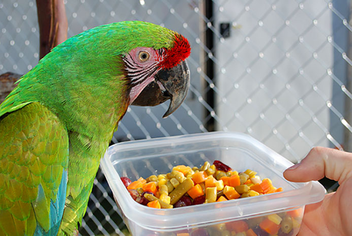
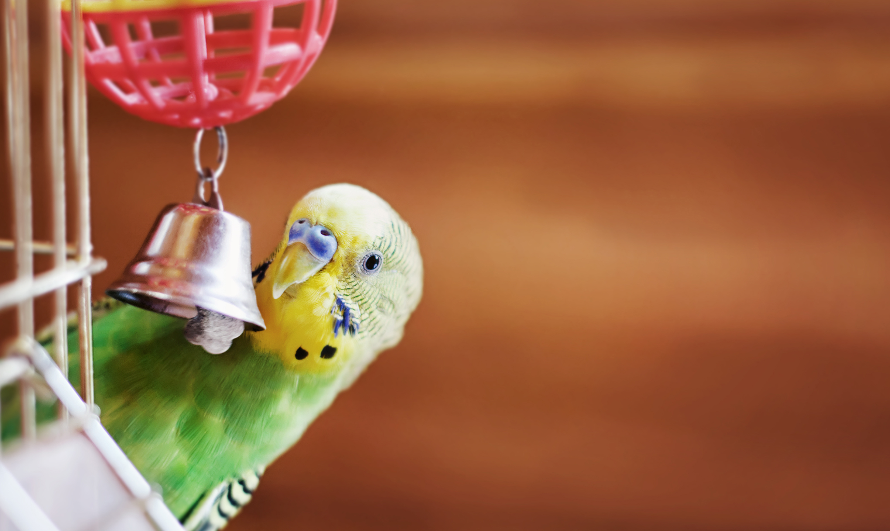

Responsible Bird Care Tips
Caring for birds goes beyond providing a cage and food. Birds are highly social animals that require mental stimulation, exercise, and companionship to thrive. Providing toys, interactive playtime, and regularly letting them out of the cage for safe exploration is crucial to their mental and physical well-being. It’s also essential to maintain a clean, spacious cage with fresh food and water, as birds can be sensitive to changes in their environment.
A balanced diet is key to keeping your bird healthy. Birds need more than just seeds; a variety of fruits, vegetables, and pellets help provide necessary nutrients. Regular vet visits are important to monitor their health and prevent issues like feather plucking or respiratory problems. By creating an enriching and healthy environment, your bird will remain happy and well-cared-for.
Planning to Get a Bird?
Getting a bird is a big decision! Here's a reminder of things to consider before bringing a friend home:
Responsibility:
- Birds require daily attention, from feeding and cleaning their cage to interacting and exercising. Be prepared for a long-term commitment, as some bird species can live for decades.
Lifestyle
- Birds are social creatures that need daily interaction. Ensure your lifestyle can accommodate the time they need for companionship, mental stimulation, and care.
Space:
- Birds need a spacious cage where they can stretch their wings, even if they have out-of-cage time. Plan for a location where they can fly freely but safely when outside the cage.
Allergies:
- Are you or anyone in your household allergic to birds? If allergies are a concern, you may need to research hypoallergenic breeds or alternatives.
Budget:
- Consider the costs of a birdcage, toys, perches, and a variety of food types. Factor in vet visits, as birds may require specialized care.
Research:
- Different bird species have unique needs, from diet and exercise to social interaction. Research the specific care requirements for the type of bird you plan to adopt to ensure you can provide the proper environment and care.
Remember: Getting a fish is a long-term commitment! Make sure you're ready to provide a loving and responsible home for your new companion.
Bird Supply Checklist
- Bird Cage: A spacious cage with plenty of room for your bird to move, flap its wings, and play. Include perches, swings, and toys for enrichment.
- Food and Water Bowls:Stainless steel or ceramic bowls that are easy to clean. Ensure water is fresh and food is rotated regularly for variety.
- Toys and Perches: Provide a variety of toys to keep your bird mentally stimulated, and perches of different sizes and textures to keep their feet healthy.
- Cage Liners:Use paper or bird-safe liners for easy cleaning and to monitor droppings, which can be an indicator of health.
- Bird Bath or Misting Bottle: Birds enjoy cleaning their feathers, so provide a bird bath or gently mist them with water to keep feathers clean and healthy.
- Decorations and Hiding Spots: Creates a comfortable habitat for your fish.
- Nail Clippers or a File: For regular grooming, to ensure their nails don’t overgrow and cause discomfort.
- Travel Carrier: A safe and secure carrier for vet visits or trips, ensuring your bird is comfortable during transport.
1. Nutrition and Feeding
Proper nutrition is essential for your bird's health, and a balanced diet should include seeds, pellets, fresh fruits, and vegetables. A seed-only diet can lack important nutrients, so offering variety is key. Make sure to feed your bird the right amount to avoid overfeeding and obesity. Additionally, it's crucial to provide fresh water at all times to ensure your bird stays hydrated and healthy.
2. Health and Vet Care
Regular vet visits are crucial for monitoring your bird’s health and catching potential issues early, such as respiratory problems or feather plucking. Birds tend to hide signs of illness, so yearly check-ups with an avian vet are recommended. Preventative care ensures your bird stays healthy and active. Furthermore, keeping your bird's cage clean and well-ventilated can also help prevent the spread of diseases and maintain a healthy environment.
3. Grooming
Grooming helps maintain your bird’s feathers and overall cleanliness, so regular baths or misting are essential. Nail trimming may be needed to prevent overgrowth, and wing clipping is optional depending on whether you allow flight. Proper grooming promotes comfort and reduces stress. Additionally, beak trimming may also be necessary to prevent overgrowth and ensure your bird can eat and preen properly.
4. Creating a Safe Environment
Your bird’s cage should be large enough for movement and equipped with perches, toys, and swings for mental stimulation. Keep their living space free from hazards such as toxic plants or open windows. Supervised time outside the cage is beneficial but should always be in a bird-safe room. Rotating toys and accessories regularly can also help prevent boredom and stimulate your bird's natural curiosity.
5. Attention and Socialization
Birds are highly social animals and require daily interaction with you or other birds to stay mentally and emotionally healthy. Provide several hours of play and talking each day to prevent boredom and behavioral issues. Without enough socialization, birds can become lonely and stressed. In addition, creating a routine that includes set times for play, feeding, and sleep can help provide a sense of security and stability for your bird. Furthermore, consider providing a mirror or other reflective surface to provide entertainment and mental stimulation when you're not available to interact.
How much attention should a Bird get?
Birds need several hours of attention and social interaction daily to remain happy and well-adjusted. This includes talking, playing, and letting them explore safely outside their cage. Without sufficient attention, birds can develop negative behaviors due to loneliness or frustration.
Related Forum Discussions

Training • Pet Care • Health
What fruit can i feed to my Bird?

Training • Pet Care • Health
Best way to train a Bird?